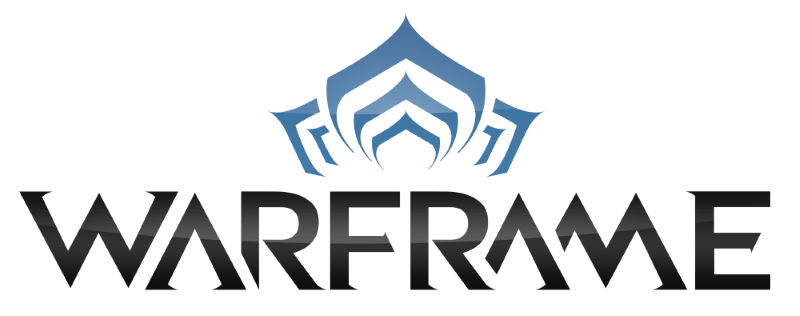

<ion-header>
  <ion-navbar>
    <button ion-button menuToggle>
      <ion-icon name="menu"></ion-icon>
    </button>
    <ion-title>Warframe tracker</ion-title>
  </ion-navbar>
</ion-header>

<ion-content>
  <div class="container">
    
  </div>
  <ion-list inset>
    <button ion-item *ngFor="let item of items" (click)="openNavDetailsPage(item.page, item.param)">
      {{ item.title }}
    </button>
  </ion-list>
</ion-content>
